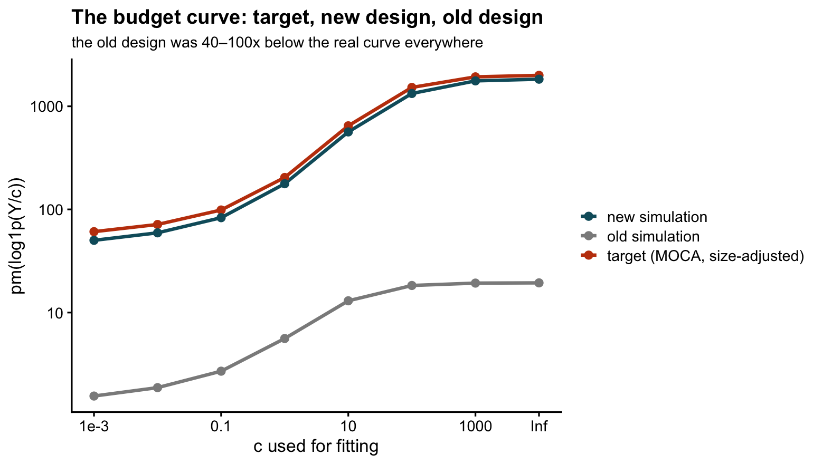
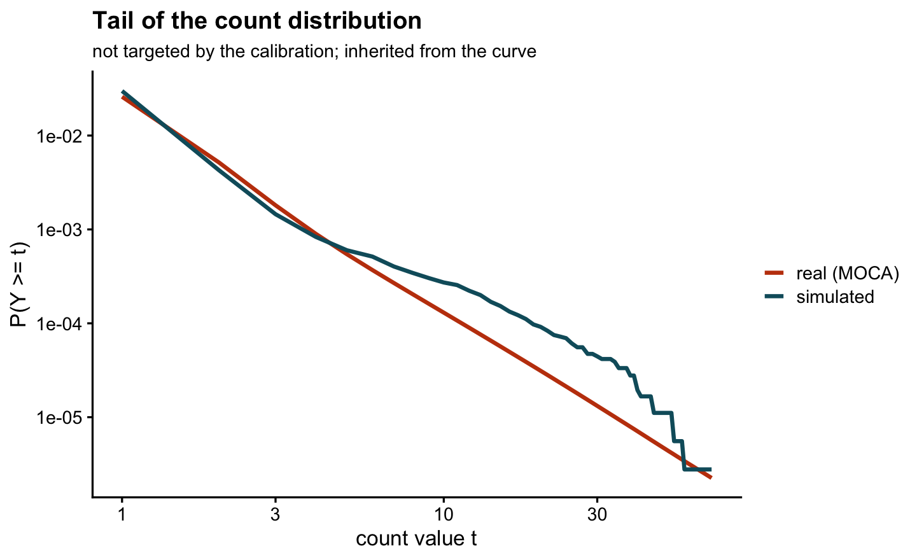

Last updated: 2026-08-08
Checks: 6 1
Knit directory: log1p_experiments/
This reproducible R Markdown analysis was created with workflowr (version 1.7.2). The Checks tab describes the reproducibility checks that were applied when the results were created. The Past versions tab lists the development history.
Great! Since the R Markdown file has been committed to the Git repository, you know the exact version of the code that produced these results.
Great job! The global environment was empty. Objects defined in the global environment can affect the analysis in your R Markdown file in unknown ways. For reproduciblity it’s best to always run the code in an empty environment.
The command set.seed(20240402) was run prior to running
the code in the R Markdown file. Setting a seed ensures that any results
that rely on randomness, e.g. subsampling or permutations, are
reproducible.
Great job! Recording the operating system, R version, and package versions is critical for reproducibility.
To ensure reproducibility of the results, delete the cache directory
sim_design_cache and re-run the analysis. To have workflowr
automatically delete the cache directory prior to building the file, set
delete_cache = TRUE when running wflow_build()
or wflow_publish().
Great job! Using relative paths to the files within your workflowr project makes it easier to run your code on other machines.
Great! You are using Git for version control. Tracking code development and connecting the code version to the results is critical for reproducibility.
The results in this page were generated with repository version b6e92a1. See the Past versions tab to see a history of the changes made to the R Markdown and HTML files.
Note that you need to be careful to ensure that all relevant files for
the analysis have been committed to Git prior to generating the results
(you can use wflow_publish or
wflow_git_commit). workflowr only checks the R Markdown
file, but you know if there are other scripts or data files that it
depends on. Below is the status of the Git repository when the results
were generated:
Ignored files:
Ignored: .DS_Store
Ignored: analysis/c_grid_sim_cache/
Ignored: analysis/hoyer_sparsity_c_cache/
Ignored: analysis/log1p_identifiability_cache/
Ignored: analysis/sim_design_cache/
Note that any generated files, e.g. HTML, png, CSS, etc., are not included in this status report because it is ok for generated content to have uncommitted changes.
These are the previous versions of the repository in which changes were
made to the R Markdown (analysis/sim_design.Rmd) and HTML
(docs/sim_design.html) files. If you’ve configured a remote
Git repository (see ?wflow_git_remote), click on the
hyperlinks in the table below to view the files as they were in that
past version.
| File | Version | Author | Date | Message |
|---|---|---|---|---|
| Rmd | b6e92a1 | Eric Weine | 2026-08-08 | Add sim_design: budget-curve-calibrated simulation matched to MOCA |
library(ggplot2); library(cowplot)
theme_set(theme_cowplot(font_size = 11))One generator, used everywhere a simulation appears: the sparsity and identifiability experiments across values of \(c\), and the assessment of the approximation accuracy. The design has three requirements.
Fix the dimensions \(n\), \(p\), the rank \(K\), a link constant \(c_{\textrm{true}}\), and the Dirichlet concentration \(a = 0.3\). The calibration below supplies four numbers: a zero probability \(\pi_0\), a location \(\mu\), a scale \(\sigma\), and a cap \(T\). Then:
Each ingredient of step 2 has one job. The point mass makes most rates exactly zero, which is where the zeros of real count matrices come from. The log-\(t\) body gives the counts a heavy tail, which lognormal magnitudes cannot produce (we tried: the maximum count comes out several times too small). The cap exists because the maximum of unbounded heavy-tailed draws varies wildly from seed to seed — with a cap, the extreme counts land in the same place every time, as they should for a matrix of fixed size.
The property of the data that our theory identifies as consequential is the budget curve
\[ c \;\mapsto\; \operatorname{pm}\!\left(\log(1 + Y/c)\right), \qquad \operatorname{pm}(x) = \frac{\max(x)}{\operatorname{mean}(x)} , \]
the peak-to-mean ratio of the data seen through the link, as a function of the \(c\) used to fit. By the results in Why the sparsity of a log1p fit is decided by Y and c (and the corresponding appendix of the paper), this curve caps the Hoyer sparsity that any rank-\(K\) fit can attain at each \(c\) — and on both our simulations and the paper’s real-data fits, the cap is essentially attained. So if a simulation gets this curve right, it reproduces the phenomenon the sparsity experiments study; if it gets it wrong, no other resemblance helps.
Two facts make the curve a practical calibration target.
The four calibrated numbers map onto the curve’s features: \(\pi_0\) sets the small-\(c\) floor (the zero fraction), \(\mu\) the overall level, \(\sigma\) the transition, and \(T\) the large-\(c\) ceiling.
We calibrate against the MOCA counts (26,183 genes \(\times\) 1,331,984 cells) — the same
dataset used in the paper’s approximation-accuracy experiments, so a
single real dataset anchors every simulation in the paper. The histogram
was extracted once with tabulate(); it is a 1KB file.
z <- readRDS("data/moca_count_histogram.rds") # h = counts of value t>=1; np
p_t <- c(z$np - sum(z$h), z$h) / z$np # P(Y = t), t = 0, 1, ...
tv <- 0:(length(p_t) - 1)
N_S <- 600L; P_S <- 600L; NP_S <- N_S * P_S # simulation dimensions
K <- 10L; A_SIG <- 0.3; C_TRUE <- 1
tstar <- tv[min(which(cumsum(p_t)^NP_S >= 0.5))] # median max of NP_S draws
CS <- c(1e-3, 1e-2, 1e-1, 1, 10, 100, 1e3, Inf) # the fitting grid
target <- sapply(CS, function(cc) {
g <- function(t) if (is.infinite(cc)) t else log1p(t/cc)
g(tstar) / sum(p_t * g(tv))
})
knitr::kable(data.frame(
`real zero fraction` = round(p_t[1], 4),
`real mean` = round(sum(p_t * tv), 4),
`real max` = max(tv),
`size-adjusted max t*` = tstar, check.names = FALSE))| real zero fraction | real mean | real max | size-adjusted max t* |
|---|---|---|---|
| 0.9741 | 0.0366 | 1024 | 73 |
knitr::kable(t(setNames(round(target, 1), paste0("c=", format(CS)))),
caption = "The size-adjusted target budget curve.")| c=1e-03 | c=1e-02 | c=1e-01 | c=1e+00 | c=1e+01 | c=1e+02 | c=1e+03 | c= Inf |
|---|---|---|---|---|---|---|---|
| 60.9 | 71.4 | 98.7 | 204.1 | 646.7 | 1523.7 | 1929.8 | 1995.4 |
Nelder–Mead over the four knobs. The loss is the squared log-mismatch of the curves, averaged over three fixed seeds (fixing seeds inside the loss makes it a deterministic function, which is all Nelder–Mead asks; averaging keeps the optimizer from exploiting one seed’s luck).
sim_Y <- function(par, seed, n = N_S, p = P_S) {
PI0 <- plogis(par[1]); mu <- par[2]; sig <- exp(par[3]); CAP <- exp(par[4])
set.seed(seed)
L <- matrix(rgamma(n*K, A_SIG), n, K); L <- L / rowSums(L)
Fm <- matrix(pmin(exp(mu + sig * rt(p*K, df = 4)), CAP) *
(runif(p*K) > PI0), p, K)
matrix(rpois(n*p, C_TRUE * expm1(tcrossprod(L, Fm))), n, p)
}
curve_of <- function(Y) sapply(CS, function(cc) {
g <- if (is.infinite(cc)) as.numeric(Y) else log1p(Y/cc)
max(g) / mean(g) })
loss <- function(par) mean(sapply(1:3, function(s) {
cv <- curve_of(sim_Y(par, s))
if (any(!is.finite(cv)) || any(cv <= 0)) return(1e6)
sum((log(cv) - log(target))^2) }))
opt <- optim(c(qlogis(0.9), -1.3, log(0.6), log(4.3)), loss,
method = "Nelder-Mead", control = list(maxit = 500, reltol = 1e-6))
stopifnot(opt$convergence == 0)
knobs <- c(pi0 = plogis(opt$par[1]), mu = opt$par[2],
sigma = exp(opt$par[3]), cap = exp(opt$par[4]))
knitr::kable(t(round(knobs, 3)), caption = "The four calibrated numbers.")| pi0 | mu | sigma | cap |
|---|---|---|---|
| 0.902 | -1.527 | 0.666 | 4.904 |
saveRDS(list(par = opt$par, knobs = knobs, target = target, CS = CS,
tstar = tstar, n = N_S, p = P_S, K = K, a_sig = A_SIG,
c_true = C_TRUE, df = 4),
"output/sim_calibration.rds")
Warning: The above code chunk cached its results, but
it won’t be re-run if previous chunks it depends on are updated. If you
need to use caching, it is highly recommended to also set
knitr::opts_chunk$set(autodep = TRUE) at the top of the
file (in a chunk that is not cached). Alternatively, you can customize
the option dependson for each individual chunk that is
cached. Using either autodep or dependson will
remove this warning. See the
knitr cache options for more details.
Everything below uses seeds 101–105, disjoint from the three calibration seeds.
fresh <- sapply(101:105, function(s) curve_of(sim_Y(opt$par, s)))
knitr::kable(data.frame(
c = format(CS), target = round(target, 1),
`achieved (median of 5)` = round(apply(fresh, 1, median), 1),
`ratio` = round(apply(fresh, 1, median)/target, 2),
`ratio range` = paste0(round(apply(fresh/target, 1, min), 2), " – ",
round(apply(fresh/target, 1, max), 2)),
check.names = FALSE), caption = "Budget curve on held-out seeds.")| c | target | achieved (median of 5) | ratio | ratio range |
|---|---|---|---|---|
| 1e-03 | 60.9 | 50.1 | 0.82 | 0.74 – 0.88 |
| 1e-02 | 71.4 | 59.3 | 0.83 | 0.74 – 0.89 |
| 1e-01 | 98.7 | 83.1 | 0.84 | 0.75 – 0.89 |
| 1e+00 | 204.1 | 177.4 | 0.87 | 0.75 – 0.9 |
| 1e+01 | 646.7 | 564.3 | 0.87 | 0.74 – 0.91 |
| 1e+02 | 1523.7 | 1330.8 | 0.87 | 0.74 – 0.96 |
| 1e+03 | 1929.8 | 1764.0 | 0.91 | 0.75 – 0.99 |
| Inf | 1995.4 | 1831.7 | 0.92 | 0.75 – 1 |
Y <- sim_Y(opt$par, 101)
knitr::kable(data.frame(
what = c("zero fraction", "mean count", "max count"),
simulated = c(round(mean(Y == 0), 3), round(mean(Y), 3), max(Y)),
real = c(round(p_t[1], 3), round(sum(p_t*tv), 3),
paste0(tstar, " (size-adjusted)"))),
caption = "Byproducts, none of which were targeted directly.")| what | simulated | real |
|---|---|---|
| zero fraction | 0.970 | 0.974 |
| mean count | 0.042 | 0.037 |
| max count | 68.000 | 73 (size-adjusted) |
Warning: The above code chunk cached its results, but
it won’t be re-run if previous chunks it depends on are updated. If you
need to use caching, it is highly recommended to also set
knitr::opts_chunk$set(autodep = TRUE) at the top of the
file (in a chunk that is not cached). Alternatively, you can customize
the option dependson for each individual chunk that is
cached. Using either autodep or dependson will
remove this warning. See the
knitr cache options for more details.
The curve lands within about \(\pm 25\%\) of the target across six decades of \(c\), and the zero fraction, mean, and maximum come along for free — which is the point of matching a sufficient statistic rather than a list of summary numbers.
For contrast, the same curves for the previous simulation design (the 300$$300, rank-3 grid used in the earlier experiments, which calibrated the zero fraction to 0.5 and capped counts near 20):
old <- c(1.55, 1.87, 2.7, 5.6, 13.0, 18.3, 19.3, 19.4) # pm of old-sim fits
lab <- ifelse(is.infinite(CS), "Inf", format(CS, scientific = TRUE))
d <- rbind(
data.frame(c = CS, pm = target, what = "target (MOCA, size-adjusted)"),
data.frame(c = CS, pm = apply(fresh, 1, median), what = "new simulation"),
data.frame(c = CS, pm = old, what = "old simulation"))
d$x <- log10(ifelse(is.infinite(d$c), 1e4, d$c))
ggplot(d, aes(x, pm, colour = what)) +
geom_line(linewidth = 1) + geom_point(size = 2) +
scale_y_log10() +
scale_x_continuous(breaks = log10(c(1e-3, 1e-1, 10, 1e3, 1e4)),
labels = c("1e-3", "0.1", "10", "1000", "Inf")) +
scale_colour_manual(values = c("target (MOCA, size-adjusted)" = "#C2410C",
"new simulation" = "#0E5C6B",
"old simulation" = "grey55"), name = NULL) +
labs(x = "c used for fitting", y = "pm(log1p(Y/c))",
title = "The budget curve: target, new design, old design",
subtitle = "the old design was 40–100x below the real curve everywhere")
The old design was not wrong for its original purpose, but its budget curve sat two orders of magnitude below the real data’s: it probed the regime where the sparsity ceiling collapses toward zero, which real data — with its 97% zeros and heavy tail — never enters.
ccdf_sim <- rev(cumsum(rev(tabulate(Y[Y > 0], nbins = max(Y))))) / length(Y)
ccdf_real <- rev(cumsum(rev(p_t[-1])))
tt <- 1:min(length(ccdf_sim), length(ccdf_real), 200)
d2 <- rbind(data.frame(t = tt, p = ccdf_sim[tt], what = "simulated"),
data.frame(t = tt, p = ccdf_real[tt], what = "real (MOCA)"))
d2 <- d2[d2$p > 0, ]
ggplot(d2, aes(t, p, colour = what)) +
geom_line(linewidth = 1) +
scale_x_log10() + scale_y_log10() +
scale_colour_manual(values = c(`real (MOCA)` = "#C2410C",
simulated = "#0E5C6B"), name = NULL) +
labs(x = "count value t", y = "P(Y >= t)",
title = "Tail of the count distribution",
subtitle = "not targeted by the calibration; inherited from the curve")
set.seed(101)
L <- matrix(rgamma(N_S*K, A_SIG), N_S, K); L <- L / rowSums(L)
hoyer <- function(x) { m <- length(x)
(sqrt(m) - sum(x)/sqrt(sum(x^2)))/(sqrt(m) - 1) }
knitr::kable(data.frame(
`mean Hoyer sparsity of true loading columns` = round(mean(apply(L, 2, hoyer)), 3),
`mean # factors carrying 90% of a sample` = round(mean(apply(L, 1, function(r)
min(which(cumsum(sort(r, decreasing = TRUE)) >= 0.9)))), 1),
check.names = FALSE),
caption = "The controlled side: loading structure, identical for every c and seed.")| mean Hoyer sparsity of true loading columns | mean # factors carrying 90% of a sample |
|---|---|
| 0.464 | 4.3 |
Warning: The above code chunk cached its results, but
it won’t be re-run if previous chunks it depends on are updated. If you
need to use caching, it is highly recommended to also set
knitr::opts_chunk$set(autodep = TRUE) at the top of the
file (in a chunk that is not cached). Alternatively, you can customize
the option dependson for each individual chunk that is
cached. Using either autodep or dependson will
remove this warning. See the
knitr cache options for more details.
output/sim_calibration.rds drives both, at whatever \(n\), \(p\)
the experiment needs — recalibrating takes seconds if the size changes
(\(t^*\) depends on \(np\)).Matched, and verified on held-out seeds: the budget curve across six decades of \(c\); the zero fraction; the mean; the maximum; the count tail.
Not matched, by design: the real data’s shared gene-abundance profile (our factor columns are exchangeable, real genes are not), size-factor heterogeneity across cells (\(s_i = 1\) here), and gene-level mean structure. Consequently the factor-correlation phenomenology of the real fits — which is driven by the shared abundance profile — will not appear in this simulation, and no claim about it should rest on these data. If that ever becomes the target, the right tool is a parametric bootstrap of a real fit, not a redesign of this generator.
sessionInfo()R version 4.5.2 (2025-10-31)
Platform: aarch64-apple-darwin20
Running under: macOS Ventura 13.5
Matrix products: default
BLAS: /System/Library/Frameworks/Accelerate.framework/Versions/A/Frameworks/vecLib.framework/Versions/A/libBLAS.dylib
LAPACK: /Library/Frameworks/R.framework/Versions/4.5-arm64/Resources/lib/libRlapack.dylib; LAPACK version 3.12.1
locale:
[1] en_US.UTF-8/en_US.UTF-8/en_US.UTF-8/C/en_US.UTF-8/en_US.UTF-8
time zone: America/Chicago
tzcode source: internal
attached base packages:
[1] stats graphics grDevices utils datasets methods base
other attached packages:
[1] cowplot_1.2.0 ggplot2_4.0.3 workflowr_1.7.2
loaded via a namespace (and not attached):
[1] gtable_0.3.6 jsonlite_2.0.0 dplyr_1.2.1 compiler_4.5.2
[5] promises_1.5.0 tidyselect_1.2.1 Rcpp_1.1.1-1.1 stringr_1.6.0
[9] git2r_0.36.2 dichromat_2.0-0.1 callr_3.7.6 later_1.4.8
[13] jquerylib_0.1.4 scales_1.4.0 yaml_2.3.12 fastmap_1.2.0
[17] R6_2.6.1 generics_0.1.4 knitr_1.51 tibble_3.3.1
[21] rprojroot_2.1.1 RColorBrewer_1.1-3 bslib_0.10.0 pillar_1.11.1
[25] rlang_1.2.0 cachem_1.1.0 stringi_1.8.7 httpuv_1.6.17
[29] xfun_0.57 S7_0.2.2 getPass_0.2-4 fs_2.1.0
[33] sass_0.4.10 otel_0.2.0 cli_3.6.6 withr_3.0.2
[37] magrittr_2.0.5 digest_0.6.39 grid_4.5.2 processx_3.9.0
[41] rstudioapi_0.18.0 lifecycle_1.0.5 vctrs_0.7.3 evaluate_1.0.5
[45] glue_1.8.1 farver_2.1.2 whisker_0.4.1 rmarkdown_2.31
[49] httr_1.4.8 tools_4.5.2 pkgconfig_2.0.3 htmltools_0.5.9